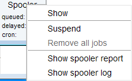

spooler
NAME
spooler - display queued, scheduled and cron jobs.
DESCRIPTION
The command spooler displays the spooler jobs. It opens a dialog showing:
- Queued jobs (jobs started with the command qu or qumulti).
- Scheduled jobs (jobs started with the command at or atmulti).
- Cron jobs (jobs started with the command cron).
For each job the dialog shows the command to be executed, the target data object, the owner and, depending on the job’s various other information.
The Spooler dialog offer the following menus:
Spooler
Allows you to suspend or remove all queued, scheduled or cron jobs.
Queue
Allows you to:
- Create new jobs.
- Suspend all jobs.
- Remove all jobs.
For priority, delayed and cron jobs, separately.
Job
Allows you to:
- Create new jobs.
- Stop, restart or delete selected jobs.
- Open the job properties dialog from here (also available by double click on the job entry).
For the selected job type.
Tools
Allows you show the spooler log file and spooler report.
Spooler Report
To show the spooler report:
Click Tools | Show spooler report
To delete entries from the spooler report:
- Mark the entries to be deleted.
- Right-click in the dialog and select Delete.
To open datasets from the spooler report:
Double-click the respective entry
or
Right-click the respective entry and select Display.
Note that the spooler report can also be opened from Spooler field (if enabled) in the Acquisition Status Bar by right-clicking the word Spooler and selecting Show spooler report.

INPUT/OUTPUT FILES
<tshome>/conf/globals
spoolerprotocol.xml - system spooler report
<userhome>/.topspin-<hostname>/prop/
spoolerprotocol.xml - user spooler report